| |
JAPAN 2018!!! =)
Osaka Universal Studios Japan Parque Espana Nagashima Spaland
Hiroshima & Kyoto Tobu Zoo Fuji-Q Highlands
Tokyo Joypolis Tokyo Dome City Yomiuriland Sea Paradise Hamanako Pal Pal Tokyo Disney Resort Yokohama Cosmoworld
Toshimaen
OK. So I normally don't show off the Google Map directions in my update, because...it's generally not necesarry. But....yikes! Not even Google Maps is giving me anything in English!? F*ck! This is gonna be a pain in the ass journey!
Hello Shinkansen. While I was taking your trains damn near daily during the Osaka portion of the trip, the bullet trains pretty much stopped for the Tokyo portion of the trip. Cause this is the only Tokyo base camp day where I take the Shinkansen.
Eh. In hindsight, I should've done Hamanako Pal Pal while I was based in Osaka since the park is actually closer to there than Tokyo. Meh, whatever. No big deal.
 HOLY SH*T!!! I FOUND MOUNT FUJI!!!
HOLY SH*T!!! I FOUND MOUNT FUJI!!!
The one bummer I had from my Fuji-Q day was that I never got to actually see Mt. Fuji. Well today, I wound up getting to see Mt. Fuji when I wasn't expecting. Maybe on another visit, I'll actually see Mt. Fuji in full, perhaps climb it. But for now, I'm happy I got to at least see it.
We have arrived at the Hamamatsu train station, and hey. I like the fountain they have here.
All right. I have to pay attention on this bus ride since....I can't understand what the bus driver is saying nor can I read any of the stops. But hey. It's a pretty route the bus is traveling.
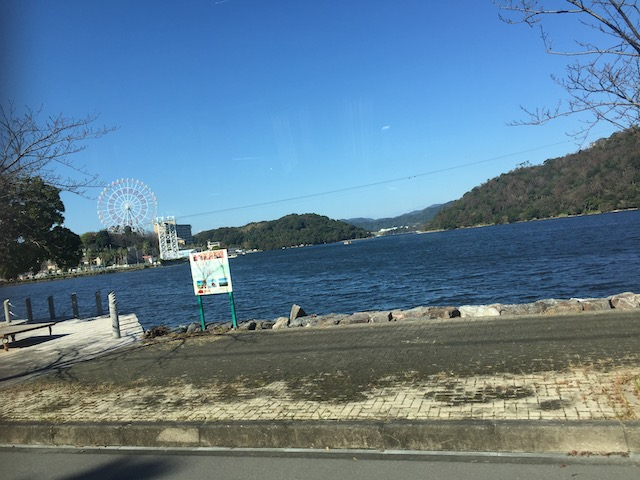
Hey look! A ferris wheel out on the other side of that bay. I wonder if that's relevant to today?
YAY!!! WE MADE IT!!!
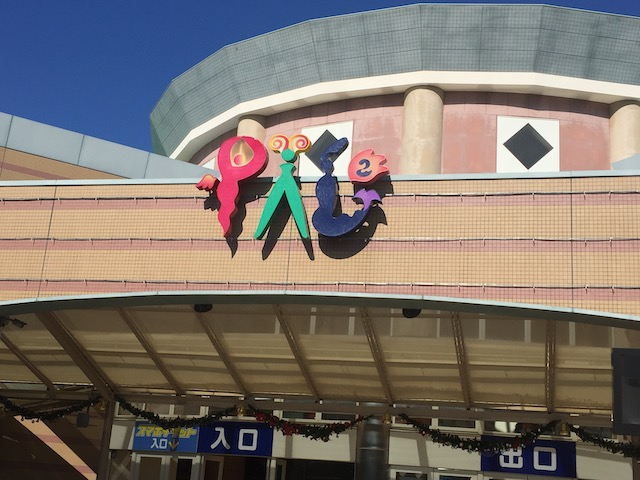
Welcome to Hamanako Pal Pal.
A: Your Christmas decorations are cute and all, but they don't compare to Yomiuriland, or even Tobu Zoo. B: It's f*cking November!!! Stop jumping the gun!
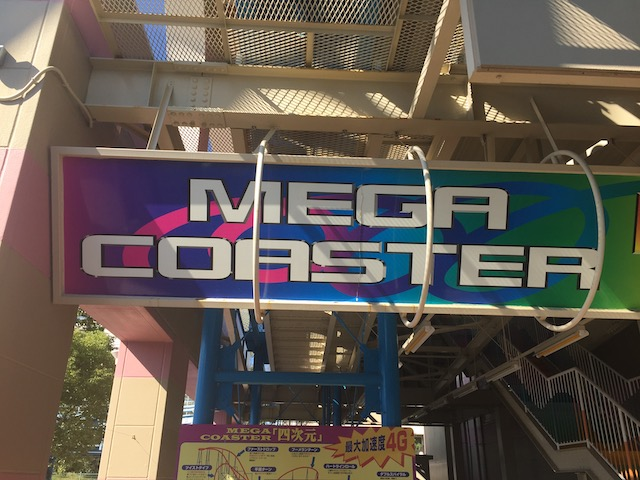
OK. You know why we're here.
Oh crap! I was hoping to never see these trains ever again!
 Mega Coaster is a coaster that may look terrible, but shockingly, this ride is actually a lot of fun!
Mega Coaster is a coaster that may look terrible, but shockingly, this ride is actually a lot of fun!
 I know it has the evil neck-chopping restraints, but because the ride is really smooth, they aren't a problem.
I know it has the evil neck-chopping restraints, but because the ride is really smooth, they aren't a problem.
 I know this looks A LOT like a certain evil coaster from Las Vegas, but unlike that POS, this is actually a lot of fun.
I know this looks A LOT like a certain evil coaster from Las Vegas, but unlike that POS, this is actually a lot of fun.
It also apparently has A LOT in common with the long gone Viper from SFGAdv. This coaster has been gone for over a decade and I never came close to getting to it, but apparently it was terrible (regardless, El Toro is what replaced, so I'm super happy that's gone, even if the roughness reports were exxagerated). And this coaster steals an element from that ride. And much like the Twist'n'Dive from Manhattan Express, it's a lot of fun on this ride.
 FAKE HELIX OF DEATH!!!
FAKE HELIX OF DEATH!!!
 OK. Let's move onto the other coasters in the park that are just for credit whoring.
OK. Let's move onto the other coasters in the park that are just for credit whoring.
 So Mini Coaster is a coaster that at first glance, kind of looks like a Wild Mouse. But aside from being about the same size, this ride has nothing in common with a Wild Mouse.
So Mini Coaster is a coaster that at first glance, kind of looks like a Wild Mouse. But aside from being about the same size, this ride has nothing in common with a Wild Mouse.
Honestly, it feels like a big glorified kiddy coaster. It's about as thrilling as one of the big Vekoma Roller Skaters. Fun, but this'll do nothing as far as thrills go.
OK. One of the park mascots here is Lobster Pinnochio. Holy Sh*t! Japan is so weird in all the right ways.
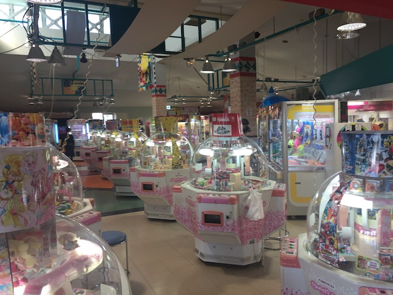
While Hamanako Pal Pal is a nice little small park with a decent collection of rides, the real centerpiece of the park is the giant arcade in the middle of it all.
OK. Mega Coaster is fun and all, but the majority of the rides at Hamanako Pal Pal are in the upper section of the park. So up we go.
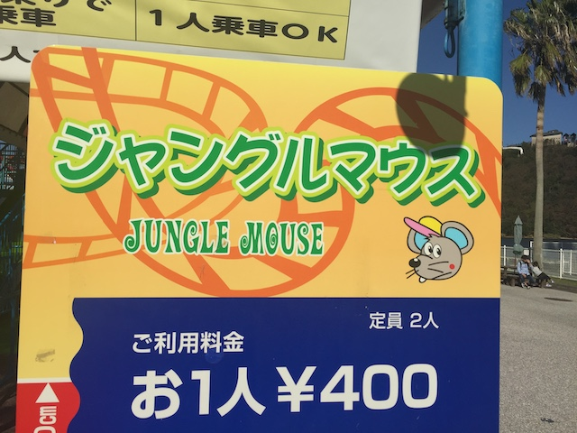
Time to get the last credit out of the way.
 So as you could tell by the name, Jungle Mouse is the parks Wild Mouse.
So as you could tell by the name, Jungle Mouse is the parks Wild Mouse.
 Most parks will have something by Mack or Maurher Sohne for their standard Wild Mouse, but Hamanako Pal Pal decided to go more old school and used....I think some local Japanese company to make their mouse.
Most parks will have something by Mack or Maurher Sohne for their standard Wild Mouse, but Hamanako Pal Pal decided to go more old school and used....I think some local Japanese company to make their mouse.
 And let me just say a couple things about this ride. It is not very thrilling and it is NOT smooth. So yeah. This ride sucks.
And let me just say a couple things about this ride. It is not very thrilling and it is NOT smooth. So yeah. This ride sucks.
 But hey. On the bright side, this is only the 2nd worst Wild Mouse I've ridden. Coast Rider still to this day remains the worst Mouse ever (F*ck those Shin-Guards!).
But hey. On the bright side, this is only the 2nd worst Wild Mouse I've ridden. Coast Rider still to this day remains the worst Mouse ever (F*ck those Shin-Guards!).
 SLAM!!!!
SLAM!!!!
I have to admit. I really like the setting of Hamanako Pal Pal right along the Uchiura Bay.
Oh boy! Jet Boating! While I don't have the yen today, it is something worth noting in the future! =)
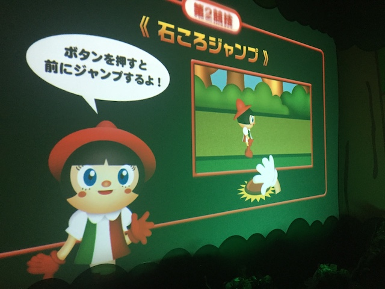
OK. So there's this really weird shooting dark ride/video game that's themed to Pinnochio. Why is this park so obsessed with Pinnochio!?
The weirdest part of all is that despite only being in Japanese and me not speaking the language, I semi-got the hang of this game! It's a lot of fun!
 I guess this park does a lot of shows, because they managed to build their own freaking stadium. The Lobster Pinnochio show must go on!
I guess this park does a lot of shows, because they managed to build their own freaking stadium. The Lobster Pinnochio show must go on!
So when Lobster Pinnochio goes to Pleasure Island, does he lose all his lobster qualities and just becomes a jackass like everyone else? Or does he maintain some of his lobster qualities and becomes Lobster-Donkey-Pinnochio?
OK. We have to talk about this flat ride. It may just look like one of those modern enterprises, but you'd be sorely mistaken if you thought that this was one of those.
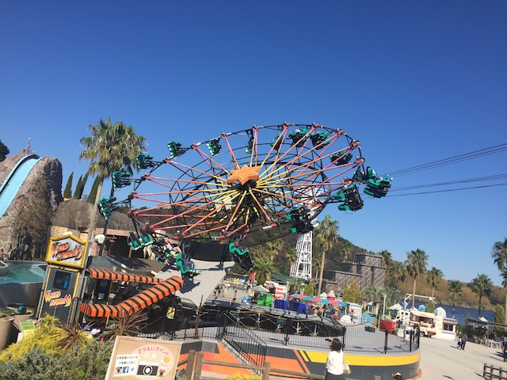
So it's basically an Enterprise, but if they also swung like a suspended coaster. HOLY CRAP!!! That makes these rides so much more fun! Seriously, why can't these rides pop up! Someone please replace their standard enterprise with one of these! That'd be a real nice upgrade! =)
Hey. Let's check out their log flume and see what all they've got.
 I gotta admit. This was a good one.
I gotta admit. This was a good one.
SPLOOSH!!!
These stupid illusions don't work. Never have worked. Never will.
Much like nearly all parks in Japan, a giant ferris wheel is present at Hamanako Pal Pal.
Put the camera where? Are they talking about my camera or is there a camera in here? If so, where is it? This sign is very poorly translated.
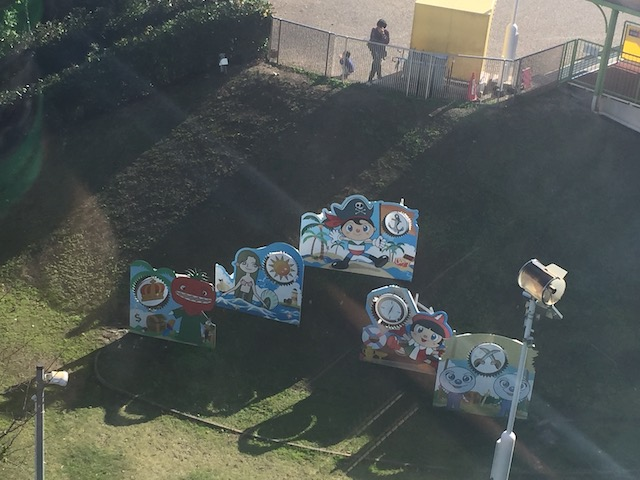
Hidden Pinnochios that you can only see from the ferris wheel.
Ariel view of Hamanako Pal Pal.
Just a quick reminder. Here's the upper half of the park where the majority of the rides are.
 And in the lower half, you have Mega Coaster.
And in the lower half, you have Mega Coaster.
I know this ride sucks, but I really like the ariel shot of Jungle Mouse.
Seriously, this thing could be a runner up in the Top 10 Park Settings List.
Wish I had more time to spend just checking out the beaches over here.
Hello random pirate ship.
I have no idea who that is. Too bad I don't know Japanese so I can't find out.
 The Japanese sure do love their ice houses. I imagine they're actually quite helpful in the summer.
The Japanese sure do love their ice houses. I imagine they're actually quite helpful in the summer.
 OK. Time to get more rides on Mega Coaster.
OK. Time to get more rides on Mega Coaster.
Just in case you forgot all the elements found on Mega Coaster.
Just another quick reminder that zippered pockets exist. Hint hint. ;)
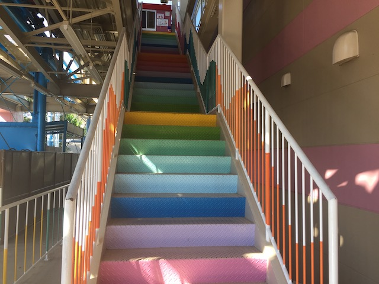
Mega Coaster celebrating Pride in its own way. =)
Wee! Airtime!
Hey New York New York! Fix your damn roller coaster! If a small little park like this can keep their Togo Looper running with no problems, then you have no excuses!
 I know Mega Coaster tends to get overlooked amongst all the coasters in Japan, but you definetly should check it out and give it a ride.
I know Mega Coaster tends to get overlooked amongst all the coasters in Japan, but you definetly should check it out and give it a ride.
If you want to see more Mega Coaster, check out all the raw footage we shot of this ride.
Merry Christmas to you too Hamanako Pal Pal! Thanks for being a really fun park with a really fun coaster and nice collection of other quirky rides.
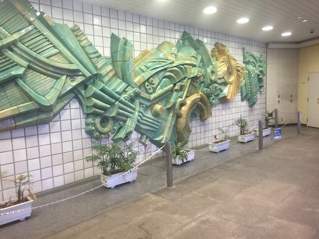
Hmm. I guess....the wall looks nice here.
Well, that was a fun day. Time to take the Shinkansen back to Tokyo.
I will never get tired of exploring around the heart of Tokyo.
Holy Sh*t! Tower Records is still a thing in Japan!
OK. After massive success with Japanese McDonalds, a cool experience at Japanese Wendys, and Japanese Taco Bell was....all right. So here we are at Japanese Burger King. There are NO differences between Japanese Burger King and American Burger King (aside from chocolate pies)! It's good, but its something where....yeah. I should've gotten something local cause I can get this back home.
This country is amazing!
Turning Japanese! I think I'm Turning Japanese! I really think so!
 I have no idea what that's selling. All I know is that I really like that dog!
I have no idea what that's selling. All I know is that I really like that dog!
OK. Is that building supposed to look like that and this is just weird modern art or did the bottom just....What the hell happened to this building!!?
All right. We're not just aimlessly wandering around Tokyo. Where could we be heading right now?
Ooh! A Disney Store! I bet there's some fun browsing in here!
I know I have no need for that. But I always like random Disney merchandise. =)
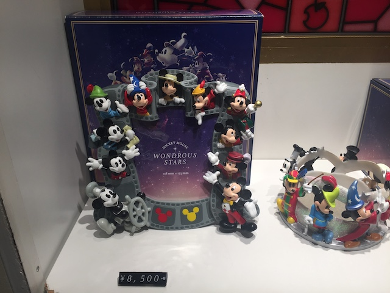
Aww. I used to have a snowglobe just like that. But I broke it because I was a stupid child who didn't take care of his belongings.
"I know you Kevin. You did not come in here to just look around at all the Disney Stuff. I know why you're here."
And of course, that's why we had to come in here tonight. Time to buy Tokyo Disney tickets!!! =)
These next three days are gonna be so much fun.
(Now this is an update to look foreward to)
Tokyo Disney Resort
Home
|